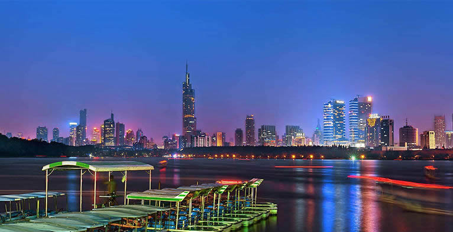
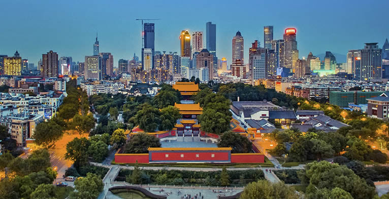
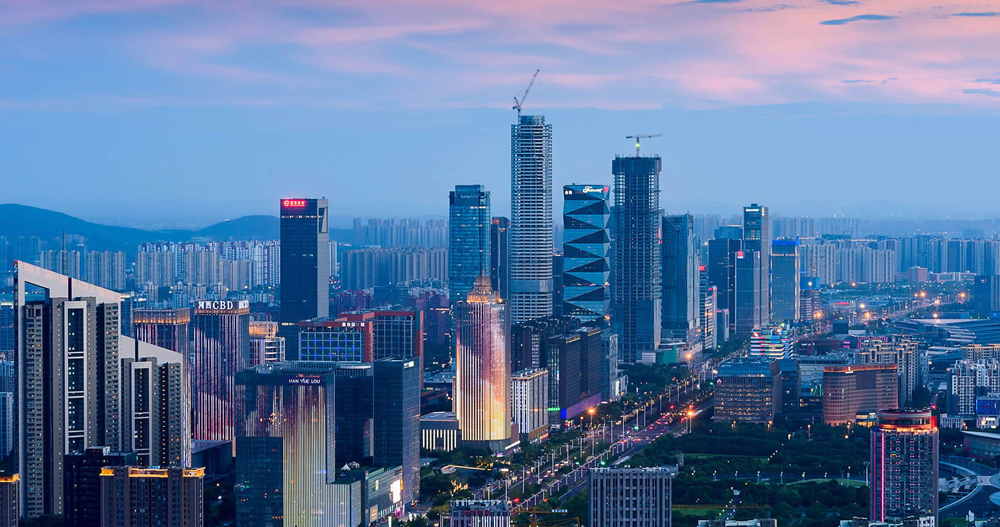

-
No.1金陵灯会
-
No.2梅花节
-
No.3爬城头
-
No.4上巳节
-
No.5图吉利、讨头彩、盼来年
-
No.6跑龙灯
-
南京概述
 南京，简称“宁”，古称金陵、建康，是江苏省会、副省级市、南京都市圈核心城市，下辖11个区，总面积6587km²，2016年建成区面积1125.78km²。2017年常住人口为833.5万人，城镇常住人口685.89万人，城镇化率为82.29%。
南京，简称“宁”，古称金陵、建康，是江苏省会、副省级市、南京都市圈核心城市，下辖11个区，总面积6587km²，2016年建成区面积1125.78km²。2017年常住人口为833.5万人，城镇常住人口685.89万人，城镇化率为82.29%。

- 
-
南京概述
南京地处中国东部、长江下游、濒江近海，是中国东部战区司令部驻地，长江国际航运物流中心，长三角辐射带动中西部地区发展的国家重要门户城市，也是东部沿海经济带与长江经济带战略交汇的重要节点城市。
- 
-
南京概述
南京是中国四大古都、首批国家历史文化名城，是中华文明的重要发祥地，有着7000多年文明史、近2600年建城史和近500年的建都史，有“六朝古都”、“十朝都会”之称，有“天下文枢”、“东南第一学”的美誉。

南京民俗
地理环境
南京住宿 南京市的酒店业很发达，不乏国际豪华品牌和各类中低档背包旅馆。 综合驴友们的关注热点，主要是按区域划分，分为四大类。 最热门的当属夫子庙秦淮河区域。在城区偏南，但离地铁站有一段路,有公交车直达火车站。到总统府和钟山景区有游2路直达。价位适中。那里是南京民俗文化集中地之一,贴近秦淮河畔，可领略“十里秦淮”繁华热闹的金粉气息。南京夫子庙青年旅舍也坐落在那里。
南京住宿
南京美食
南京小吃列中国四大小吃之首，主要的集中地有夫子庙、狮子桥、甘家大院等，刘长兴面馆是南京著名的面馆，百年老字号韩复兴是南京著名的盐水鸭、板鸭店。夫子庙的大石坝街和湖南路的狮子桥为著名的美食街，有很多特色小吃，如回味鸭血粉丝、狮王府狮子头、尹氏
鸡汁汤包、莲湖糕团店、“忘不了”酸菜鱼、绿柳居等，此外南京还有秦淮八绝、鸭血粉丝汤、小笼包、煮干丝、如意回卤干、什锦豆腐涝、状元豆、盐水鸭、旺鸡蛋、活珠子、臭豆腐、南农烧鸡、糖芋苗、东山老鹅等等风味小吃。